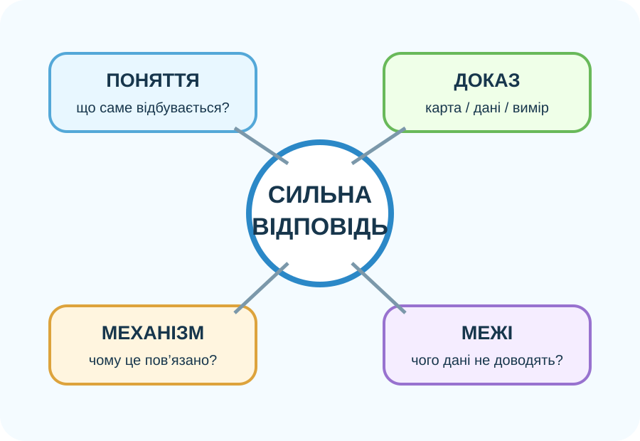

1. Швидка самодіагностика

Де саме «ламається» відповідь?
Оберіть твердження, яке найкраще описує сильний географічний висновок.
Мета корекції — не запам’ятати більше, а точніше поєднати поняття, дані й причинний механізм.
2. Чотири типові помилки ДТР
Помилка 1: об’єкт ≠ система
«Ліс — це просто сукупність дерев». Чого бракує?
Помилка 2: сусідство ≠ причина
«Біля річки є завод, отже саме він спричинив забруднення».
Помилка 3: карта показує все
Що OpenStreetMap не дає виміряти напряму?
Помилка 4: відновлюваний ≠ невичерпний
Ліс є відновлюваним ресурсом. Коли використання стає виснажливим?
3. Корекція роботи з картою
Знайдіть поля, дороги, забудову, зелені ділянки та водні об’єкти. Карта допомагає описати просторове сусідство.
Зробіть висновок без «стрибка» до причини
Сильна відповідь розділяє спостереження, припущення і спосіб перевірки.
4. Корекція роботи з супутниковими даними

NASA Earth Observatory: часовий ряд дозволяє побачити зміну земного покриву в часі.
Що доводить зображення?
Відкрити ESA WorldCover ↗Міні-аналіз WorldCover
WorldCover — глобальна карта земного покриву 2020 і 2021 років із роздільністю 10 м на основі Sentinel‑1 та Sentinel‑2. Але дві версії створені різними алгоритмами, тому різниця між ними може містити не лише реальні зміни, а й алгоритмічні відмінності.
5. Коротке відео: Земля як система
Після перегляду
Чому зміна одного компонента природного комплексу може змінити інші?
6. Теорія-опора після корекційних завдань
Біосфера
Сфера поширення життя. Організми беруть участь у ґрунтоутворенні, газообміні, кругообігах речовин і формуванні природних комплексів.
Природний комплекс
Взаємопов’язана система рельєфу, вод, повітря, ґрунтів, рослинності й тваринного світу. Зміна компонента може передаватися через причинний ланцюг.
Антропосфера
Простір життя та діяльності людини. Господарство використовує ресурси й одночасно змінює природні компоненти, тому важливе невиснажливе природокористування.
Доказ
Карта показує просторові зв’язки, супутник — властивості поверхні та їх зміну, польове дослідження — локальні вимірювання. Найсильніші висновки поєднують кілька незалежних джерел.
7. CER — виправте слабкий висновок
Слабка відповідь: «Людина руйнує природу, бо скрізь є міста і дороги».
8. Домашнє завдання
Повторити §§47–51. Виберіть одну помилку, яку Ви сьогодні виправили, й зробіть мінікартку: «було → чому неправильно → як правильно → який доказ потрібен».